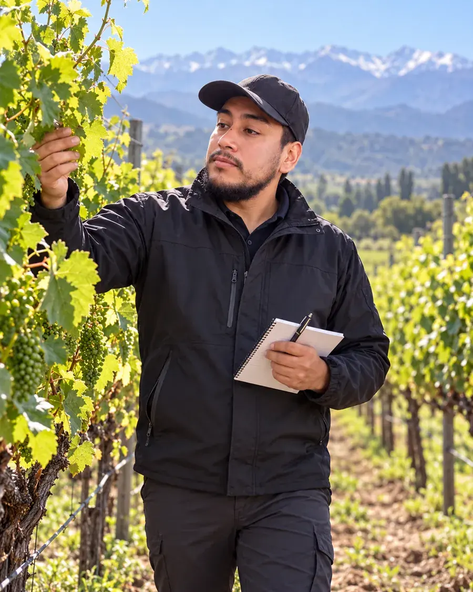

FLORES DE CORTE · NIVEL INICIAL
Floricultura práctica: producción y manejo de flores de corte
Del cultivo a un tallo de calidad: aprende a seleccionar especies, organizar una producción piloto y tomar decisiones con registros. Desarrolla tu proyecto floral con teoría, ejemplos de campo y cálculos explicados.

Lo que podrás hacer
- Comparar especies y cultivares según clima, recursos y cliente.
- Relacionar luz, fotoperiodo, fenología y ambiente protegido.
- Calcular propagación, densidad, volumen de riego y aceptación de tallos.
- Diseñar un monitoreo sanitario con criterios de diagnóstico.
- Organizar cosecha, hidratación, frío y pruebas de vida en florero por especie.
- Estimar costos, contribución y punto de equilibrio con supuestos explícitos.
Programa de doce temas
- Floricultura y elección de especies
- Botánica, fenología y floración
- Sitio, clima y cultivo protegido
- Suelo, sustratos y calidad del agua
- Propagación por semillas, esquejes y bulbos
- Plantación, densidad y programación
- Riego, nutrición y fertirriego
- Pinzamiento, desbotonado y tutorado
- Monitoreo sanitario y manejo integrado
- Cosecha y clasificación de tallos
- Hidratación, frío y vida en florero
- Costos, venta y proyecto floral
Para quién es
Personas que comienzan en flores de corte, estudiantes y productores que quieren preparar una unidad piloto. Requiere cálculo básico y registro de observaciones. Todas las actividades pueden resolverse con datos simulados. Zinnia y girasol ilustran ciclos estacionales; lilium, clavel y alstroemeria permiten comparar protocolos específicos.
Conoce el formato antes de comprar
Ocho diapositivas reales de selección de especies y un ejemplo de distribución del área. La muestra es un extracto, con datos simulados y solución explicada.
Abrir muestra gratuita →Cómo acceder
- Consulta el programa y las condiciones por WhatsApp.
- Confirma pago y plazo de activación con el encargado.
- Recibe tu cuenta con acceso al curso por seis meses desde la activación.
Evaluación y certificados
Completa las doce lecciones y aprueba con al menos 21 respuestas correctas de 30 para habilitar los certificados privados de participación y aprobación de CAMPO EDUCA. Identifican a José Ignacio Farías, Ingeniero Agrícola, con sello de aprobado. No equivalen a un título ni a una certificación oficial.

José Ignacio Farías
Ingeniero Agrícola · Encargado de CAMPO EDUCA
Fundamentos y lectura técnica
Referencias de INIA Chile, Virginia Tech, Penn State, UC Davis, NC State y UMass, junto con investigación sobre floración. Las explicaciones, esquemas y casos son originales de CAMPO EDUCA; las referencias no implican aval institucional. Los protocolos de temperatura, manejo y nutrición se comprueban para cada especie, cultivar y sitio.